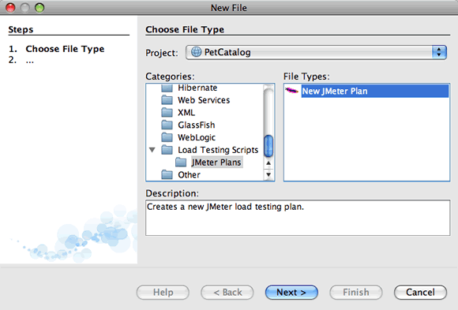
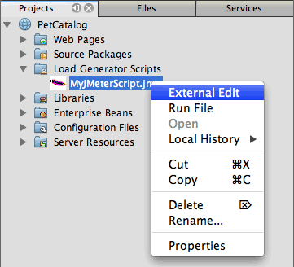

Apache NetBeans
Apache NetBeansLatest release
使用 NetBeans IDE 中的负载生成器
| This tutorial needs a review. You can edit it in GitHub following these contribution guidelines. |
测试应用程序的性能时，在有典型负载的情况下进行测试是很有用的。如果在开发环境中运行应用程序，则可能很难做到这一点。要模拟在有负载的情况下运行的应用程序，一种方法是使用负载生成器脚本。本文档概述了 IDE 提供的负载生成器支持。
IDE 依赖于集成第三方工具，而自身不提供负载生成器运行时。NetBeans IDE 支持用于重放负载测试脚本的 Apache JMeter 负载测试工具（主页）。要在 IDE 中使用 JMeter 工具，需要先从更新中心下载所需的插件。

Figure 1. 此页上的内容适用于 NetBeans IDE 7.2、7.3、7.4 和 8.0
入门指南
先决条件
本文档假定您具备以下技术的一些基本知识或编程经验：
-
Java 编程
-
NetBeans IDE
本教程所需要的软件
在学习本教程之前，您需要在计算机上安装以下软件：
| 软件或资源 | 要求的版本 |
|---|---|
7.2, 7.3, 7.4, 8.0 |
|
版本 7 或 8 |
|
JMeter 工具包和负载生成器插件 |
可从 NetBeans 更新中心下载 |
GlassFish 应用服务器 |
3.x、4.x |
注：
-
性能分析工具与 NetBeans IDE 捆绑在一起，无需进行特定的设置，即可开始对应用程序进行性能分析。
-
要添加对 JMeter 负载测试工具的支持，请使用插件管理器从更新中心下载 JMeter 工具包和负载生成器插件。
安装 JMeter 插件
您可以轻松地添加对 JMeter 负载生成器的支持，方法是从 NetBeans 更新中心下载并安装 JMeter 工具包*和*负载生成器插件。
要下载插件，请执行以下操作：
-
从主菜单中选择 "Tools"（工具）> "Plugins"（插件）以打开插件管理器。
-
单击 "Available Plugins"（可用插件）标签，然后选中 JMeter 工具包和负载生成器插件的复选框。单击 "Install"（安装）。

Figure 2. 插件管理器中的负载生成器插件
-
逐步执行安装程序，以下载并安装插件，然后单击 "Finish"（完成）。单击 "Close"（关闭），以关闭插件管理器。
安装了插件之后，会将 "Load Testing Scripts"（负载测试脚本）类别添加到新建文件向导中。
使用 JMeter 负载测试脚本
JMeter 插件支持可与 IDE 的性能分析工具进行紧密集成。通过 JMeter 插件，可以从 IDE 中轻松创建并运行 JMeter 负载测试脚本。
要使用负载生成器脚本，可以为特定项目创建一个脚本，然后根据项目负载的类型修改该脚本，该负载可能放在运行应用程序的服务器上。运行脚本时，该脚本会在服务器上放置负载，以模拟在典型条件下运行的应用程序的行为。此后，可以测试应用程序的性能，得到的测试结果可能与在典型条件下运行的应用程序的性能更接近。
创建新的负载测试脚本
下载并安装了插件之后，将在新建文件向导中创建一个新类别。使用新建文件向导，可以在项目中创建负载脚本文件。
要创建新的负载测试脚本，请执行以下操作：
-
在项目窗口中，右键单击项目节点，然后选择 "New"（新建）> "Other"（其他）。
-
在 "Categories"（类别）窗格中，展开 "Load Testing Scripts"（负载测试脚本），选择 "JMeter Plans"（JMeter 计划），然后在 "File Types"（文件类型）窗格中，选择 "New JMeter Plan"（新建 JMeter 计划）。单击 "Next"（下一步）。
-
键入脚本的名称，然后单击 "Finish"（完成）。
创建新脚本时，IDE 会将该脚本放在 "Projects"（项目）窗口中 "Load Generator Scripts"（负载生成器脚本）节点的下方。在 "Files"（文件）窗口中，可以看到 IDE 将脚本保存在 jmeter 目录中。如果已在 IDE 外部创建负载测试脚本，则可创建 jmeter 目录，然后将脚本添加到该目录中，以便从 IDE 中运行该脚本。

编辑负载测试脚本
通过 JMeter 外部编辑器，可以根据应用程序的要求修改脚本。创建负载测试脚本或向项目中添加脚本后，可以调用外部编辑器，方法是：在 "Projects"（项目）窗口中右键单击脚本，然后选择 External Edit（外部编辑）。
有关编辑 JMeter 测试脚本的详细信息，请参见 JMeter 用户手册。

Figure 3. 项目结构中的 JMeter 负载测试脚本
启动负载测试脚本
负载测试脚本可采用以下方式启动：
-
在独立模式下
在 Services（服务）窗口中，右键单击 "Load Generators"（负载生成器）节点，然后选择 "JMeter" > "Start"（启动）。执行此操作后，将打开一个浏览对话框，您可以在其中指定要运行的脚本。

-
在 "Select Profiling Task"（选择性能分析任务）窗口中
对 Web 应用程序进行性能分析时，可以在 "Select Profiling Task"（选择性能分析任务）窗口中指定要运行的负载测试脚本。选定的脚本正好在浏览器窗口打开前启动。

停止和重新启动负载测试脚本
您可以在*输出*窗口或*服务*窗口中停止和重新启动负载测试脚本。
加载脚本之后，将在 *"Output"（输出）窗口*中打开 "JMeter" 标签。该窗口中会显示负载生成器的当前状态。"Output"（输出）窗口的左旁注中提供了一些用于启动、停止或重新启动脚本的控件。

Figure 4. 显示负载生成器状态的
负载生成器的当前状态还显示在 *"Services"（服务）窗口*中。要停止和重新启动脚本，可以选择 "JMeter" 节点下方的某个节点，然后从弹出式菜单中选择所需项。

Figure 5. 显示负载生成器状态的
其他资源
此基本概述介绍了如何在 IDE 中使用 JMeter 负载测试脚本。有关为应用程序开发负载测试脚本的信息，请参见以下资源：